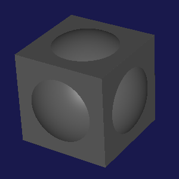
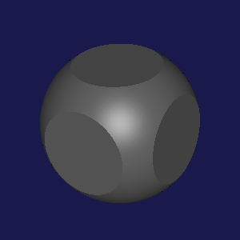
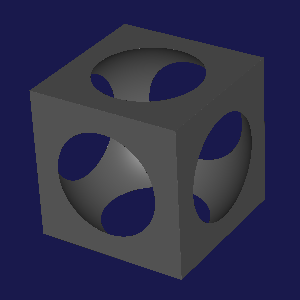
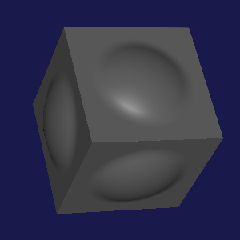
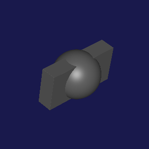
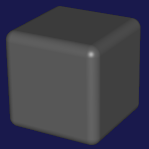
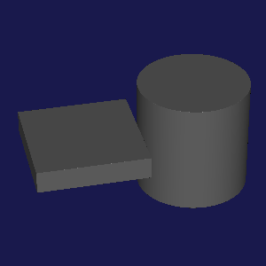

3 Ruckus Language Reference
Ruckus design files start with a lang line:
| #lang ruckus | package: ruckus |
Ruckus is based on Racket. You don’t need to know Racket to do basic work in Ruckus, but as designs become more complicated, Racket’s features can be a huge help.
3.1 Coordinates
All coordinates in Ruckus are relative.
Primitive objects (see below) are always created at the origin of their local coordinate frame. The relationship between an object’s local coordinates and world coordinates can be controlled by transforms, such as at and rotate.
For example, this sphere sits at the origin:
#lang ruckus (sphere 100)
We can make two spheres, separated by 200 units, using at to shift them in space:
#lang ruckus (at '(100 0 0) (sphere 100)) (at '(-100 0 0) (sphere 100))
The coordinates are relative, not absolute; they measure distance from the local origin. We can shift the local origin by wrapping the whole shebang in more at. The coordinates get added together. Thus, here we define two spheres, at locations '(100 55 0) and '(-100 55 0). They are still 200 units apart, just shifted by 55 units in one direction.
#lang ruckus (at '(0 55 0) (at '(100 0 0) (sphere 100)) (at '(-100 0 0) (sphere 100)))
This might seem a little pathological, but if we wrap the inside in a function, we have a reusable chunk we can place wherever we want:
#lang ruckus (define (spheres-200-units-apart) (at '(100 0 0) (sphere 100)) (at '(-100 0 0) (sphere 100))) (at '(0 55 0) (spheres-200-units-apart)) (at '(0 110 0) (spheres-200-units-apart)) ; ... and so on
This reusability is the real strength of using relative coordinates.
3.2 Contexts
Ruckus distinguishes between 2D and 3D contexts.
The top level of a design file is a 3D context. In a 3D context, you can only use 3D primitives, like sphere and rects, because 2D primitives don’t make sense in 3D.
#lang ruckus ; 3D context here. (sphere 100)
Any function called from a 3D context is also in a 3D context:
#lang ruckus (define (my-sphere) ; Because this is called from a 3D context, its contents are ; also in a 3D context. (sphere 100)) (my-sphere) ; called here
You can switch into a 2D context by using a projection transform, which specifies how to project flat 2D objects into 3D space. Currently, only one projection transform is available: extrude.
Within a 2D context you can only use 2D primitives, such as circle and rect.
#lang ruckus ; 3D context on the outside... (extrude 100 ; ...but 2D context on the inside. (circle 100))
To complete the circle, you can also use 3D shapes in a 2D context by using a slicing transform, which specifies how to smash a 3D object into a flat 2D shape. Currently, only one slicing transform is available: slice, which produces a cross-section.
#lang ruckus ; 3D context on the outside... (extrude 100 ; ...2D context on the inside... (circle 100) (slice ; ...and a chewy 3D center. (cube 170)))
3.3 Basic Types
procedure
(coord? v) → boolean?
v : any?
A coordinate is a list of real numbers, where the length of the list corresponds to the current context: three numbers in 3D, two in 2D.
procedure
(color? v) → boolean?
v : any?
A color literal may be:
A list of three real numbers, representing red, green, and blue, where 1.0 is full intensity and 0 is nothing.
A symbolic color name taken from the X11 color names, lower-cased and with dashes in place of spaces, e.g. 'light-goldenrod-yellow.
3.4 3D Primitives
These primitives can be employed in any 3D context.
syntax
(sphere radius)
(sphere #:radius radius) (sphere #:diameter diameter)
radius : real?
diameter : real?
Radius is the default way of specifying a sphere. We provide the #:diameter keyword as an option, because otherwise some designs wind up littered with divide-by-twos to convert specified diameters to radii. The #:radius keyword can help contrast with #:diameter in designs where both are used.
syntax
(rects size-x size-y size-z)
size-x : real?
size-y : real?
size-z : real?
syntax
(cube size)
size : real?
This is exactly equivalent to the following definition:
(define (cube size) (rects size size size))
syntax
(capsule height radius)
height : real?
radius : real?
The capsule form generates a capsule, centered around the origin, and extending along the Z axis. height gives the distance between the center points of the two ending spheres, and radius gives the radius of the capsule and the ending spheres.
Note that the actual length of a capsule along Z is given by (+ height (* 2 radius)).
syntax
(half-space normal distance)
normal : coord?
distance : real?
The plane’s normal is given by normal, and its distance from the origin along the normal is distance. Positive distances include the origin in the "inside" part of space; negative distances exclude it.
The normal will be normalized internally by Ruckus, so you can use any vector.
syntax
(interpolation-surface constraints)
constraints must be a list. Each item in the list can be one of two kinds, basic points and points with normal vectors.
Basic points (as lists of three reals) are points in space that are on the surface of the object.
Points with normals are given as a list of two points. The first is a basic point on the surface, and the second is taken as a normal vector pointing out of the surface at that point.
At least one point in the constraints list must have a normal.
This is still under development and is pretty hairy.
3.5 2D Primitives
syntax
(circle radius)
(circle #:radius radius) (circle #:diameter diameter)
radius : real?
diameter : real?
radius is the default way of specifying a circle. We provide the #:diameter keyword as an alternative for designs that prefer to specify dimensions that way, and #:radius for contrast in designs that mix both styles.
syntax
(rect size-x size-y)
size-x : real?
size-y : real?
3.6 Combinators
syntax
(union form ...)
Most combinators implicitly union their children, so an explicit union is rarely necessary.
(union (cube 330) (sphere 200))

syntax
(intersection form ...)
(intersection (cube 330) (sphere 200))

syntax
(difference first-form other-forms ...)
Unlike intersection, difference is sensitive to the order of its child forms. The first-form is treated specially. As a result, using difference is the main case where you may want to use an explicit union to group several objects together into a single form.
(difference (cube 330) (sphere 200))

syntax
(smooth-union radius form ...)
radius : real?
(smooth-union 10 (cube 330) (sphere 200))

3.7 Transforms
vector should be a valid vector in the current context: in 3D, a list of three real numbers; in 2D, a list of two. vector may be written in place as a literal, or taken from a variable.
at implicitly wraps its children in a union.
translate is a synonym for at.
(at '[0 100 0] (cube 330) (sphere 200))
When called with ratio, the single ratio is applied equally to all axes.
When called with vector, separate ratios are applied to each axis: in 3D contexts, three ratios are required, and in 2D, two are required.
scale implicitly wraps its children in a union.
(scale 1/2 (sphere 200)) (scale '[1 1/2 1/5] (cube 330))

syntax
(rotate angle forms ...)
(rotate angle #:around axis forms ...)
angle : real?
axis : (or/c 'x 'y 'z coord?)
In 2D contexts, the first version must be used, and the rotation is always counter-clockwise by angle degrees around the Z axis.
In 3D contexts, the second version must be used, and the axis must be provided.
axis can be one of the literal symbols 'x, 'y, or 'z, designating the X, Y, or Z axes, respectively.
axis can also be a literal vector, given as a list of three numbers. In this case the vector will be normalized internally.
rotate implicitly wraps its children in a union.
(rotate 45 #:around 'z (sphere 200) (cube 330))
The color col is represented as a list of real numbers, giving the fraction of red, green, and blue as a number between 0 and 1.
Color is currently only significant in the Ruckus visualizer.
(color '[0 0 1] (sphere 200) (cube 330))
syntax
(iso shift forms ...)
shift : real?
(iso +20 (cube 330))

syntax
(extrude height forms ...)
height : real?
To apply extrude to 3D child forms, you must combine it with slice, as shown in the example below.
(extrude 200 (at '[100 0] (circle 100))) (extrude 40 (slice (at '[-100 0 0] (cube 200))))

syntax
(slice forms ...)
syntax
(mirror-x forms ...)
syntax
(mirror-y forms ...)
syntax
(mirror-z forms ...)
This version is illegal in 2D contexts, since there is no Z axis.
syntax
(repeat-x period forms ...)
period : real?
syntax
(radial-repeat count forms ...)
count : integer?
3.8 Reflection
syntax
(reflect-distance forms ...)